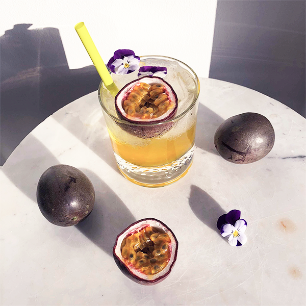

PASSION DREAM
Alt du skal bruge:
Lys rom
Sprite
Passionsfrugt sirup af mærket Teisseire (kan købes i Normal)
Isterninger
Friske passionsfrugter
Opskrift på 1 cocktail:
1/5 Lys rom
4/5 Passionsfrugt sirup
1 håndfuld isterninger
Top op med Sprite
Pynt: En halv passionsfrugt